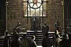

| EP | Imagem | Titulo | Prévia |
|---|---|---|---|
| 11 | "The North Remembers" | Tyrion age como conselheiro e tenta salvar o reinado de Joffrey de ameaças do presente e do passado. Daenerys procura por água e aliados. | |
| 12 | "The Night Lands" | Arya conta um segredo para Yoren e Daenerys recebe informações importantes. Após nove anos, Theon retorna para sua família. | |
| 13 | "What Is Dead May Never Die" | Tyrion desmascara um espião que servia a Cersei, enquanto Catelyn conhece novos reis. Bran, por sua vez, tem sonhos especiais. | |
| 14 |  | "Garden of Bones" | Como Tyrion e Bronn não conseguem conter a fúria de Joffrey, a punição a Sansa é exemplar. Catelyn faz um apelo a dois irmãos. |
| 15 | "The Ghost of Harrenhal" | Chega ao fim a rivalidade de Baratheon. Tyrion tem acesso a informações valiosas de Joffrey e Arya recebe uma ajuda inesperada. | |
| 16 | "The Old Gods and the New" | Arya fica frente à frente com um visitante inesperado e Dany quer o que lhe pertence. Robb e Catelyn recebem uma importante notícia. | |
| 17 | "A Man Without Honor" | Jaime reencontra um parente distante e Sansa é consolada por Cersei. Theon inicia uma caçada para reencontrar Bran e Rickon. | |
| 18 | "The Prince of Winterfell" | Theon recebe uma visita e Arya usa a inteligência para fugir de Harrenhal. Para não abandonar suas crias, Dany ignora o conselho de Jorah. | |
| 19 | "Blackwater" | Tyrion enfrenta o numeroso exército de Baratheon, já que Joffrey não aguentou a pressão. Cersei toma uma contestada decisão. | |
| 20 | "Valar Morghulis" | Depois da batalha e ainda convalescendo dos ferimentos, Tyrion é informado das mudanças. Já Theon continua em alerta em Winterfell. |